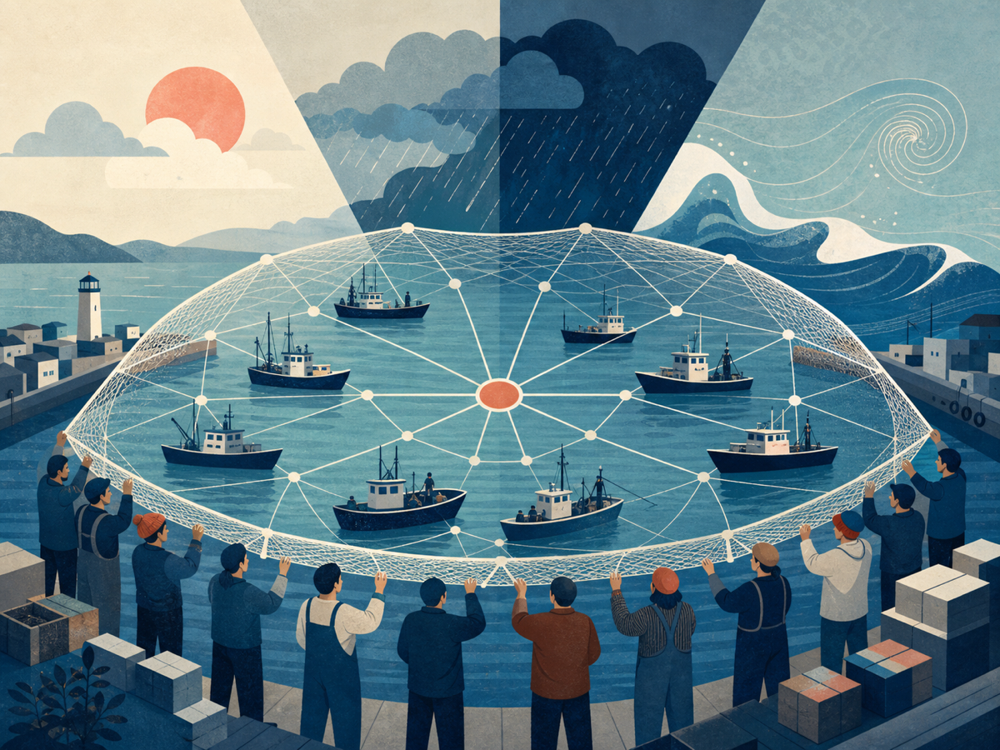
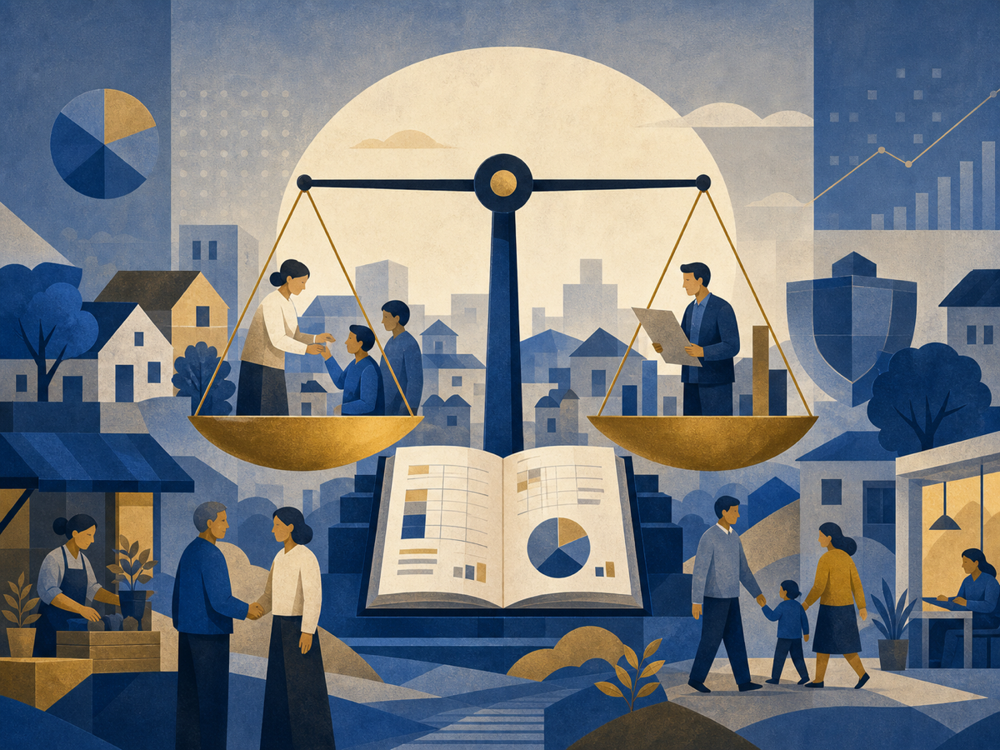

COVER STORY · 기획왜 지금,
왜 지금,
조합경영학인가
서로 다른 법과 제도 아래 놓인 조합을 하나의 조직범주로 바라보면 조합원 주권, 집행기관 통제, 성과와 위험의 배분이라는 공통의 경영 질문이 보입니다.
연구의 핵심을 현장의 언어로,
현장의 질문을 다음 연구 의제로 전합니다.
서로 다른 법과 제도 아래 놓인 조합을 하나의 조직범주로 바라보면 조합원 주권, 집행기관 통제, 성과와 위험의 배분이라는 공통의 경영 질문이 보입니다.
조합원의 질문이 의사결정에 반영되는 회의 구조와 기록의 조건을 현장 경험에서 찾습니다.
조합원 편익과 참여를 성과지표에 포함해야 하는 이유
투명성과 개인정보 보호 사이의 실무 기준
연구자와 현장 전문가가 함께 만드는 첫 논의
농협·수협·신협·협동조합·공제조합에서 나타나는 경영 변화와 현장의 쟁점을 전합니다.
사업보고서 사전 제공과 질의 기록 공개가 조합원 참여와 이사회 책임성을 어떻게 높이는지 살펴봅니다.

재해 대응, 공제와 유통사업을 연결해 조합원의 경영 위험을 줄이는 방안을 짚습니다.

지역밀착 금융을 유지하면서 여신 위험과 내부통제를 관리하는 현장의 선택을 살펴봅니다.
학술연구의 핵심을 현장에 적용할 수 있는 질문과 언어로 다시 읽습니다.
의결권 행사율만으로 참여를 설명할 수 있을까요. 정보 접근, 숙의 과정과 집행기관에 대한 통제를 함께 살펴야 합니다.
승인기관을 넘어 감시와 전략의 중심이 되는 조건
손익계산서 밖의 조합원 가치를 설명하는 방법
손실 분담에 앞서 필요한 정보와 책임의 구조
법령과 판례의 변화를 나열하지 않고 조합 운영에 미치는 영향과 대응 과제를 짚습니다.
조합원의 알 권리를 보장하면서 영업정보와 개인정보를 보호하려면 공개 대상, 시점과 절차를 명확히 정해야 합니다.
주제와 발표자, 참가 방법은 일정 확정 후 안내합니다.
투고 규정과 심사 절차를 마련하고 있습니다.
연구·현장·제도 콘텐츠를 균형 있게 구성합니다.
조합과 경영은 연구 성과를 현장에 전달하고, 현장의 문제를 다시 연구자에게 돌려주는 편집 매체를 지향합니다.